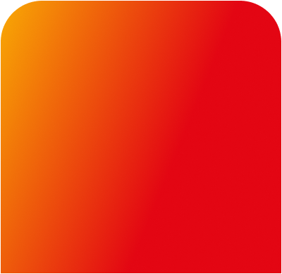
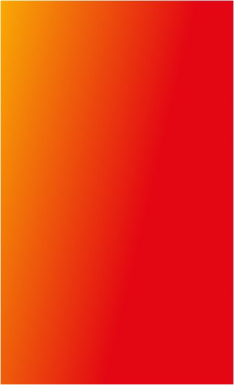

Separando conceitos que costumam ser confundidos.
O LUCRO?
Como calcular
#73 jul . ago . 26
Por: Manoela Leão
Sem controle de custos e despesas, o lucro pode desaparecer mesmo quando as vendas estão indo bem
Vender bastante não significa, necessariamente, que o negócio está lucrando. Essa é uma das descobertas mais difíceis para quem empreende: o movimento no caixa não reflete, sozinho, o que de fato sobrou. Para saber se o negócio gerou lucro, é preciso subtrair da receita tudo o que foi gasto para produzir e para manter a operação funcionando. Vamos aprender a calcular?
Nem todo dinheiro sai do caixa pelo mesmo motivo. Parte vai para produzir e manter o negócio funcionando. Parte vai para fazê-lo crescer. Saber distinguir cada tipo de gasto é o que permite calcular o lucro com precisão.

FATURAMENTO
Tudo que entrou com as vendas, antes de descontar qualquer gasto.


LUCRO
É o que sobra depois que todos os gastos são pagos.
Tudo que entrou com as vendas, antes de descontar qualquer gasto.
São os gastos diretamente ligados ao que você produz ou vende: ingredientes, embalagens, mão de obra de produção.
É o que sobra depois que todos os gastos são pagos.
São os gastos necessários para manter o negócio funcionando, mas que não estão ligados diretamente à produção: aluguel, energia elétrica, internet, salários de quem trabalha na parte administrativa.
Compra de equipamento ou reforma.
Não entra no cálculo do lucro do mês.
Separando conceitos que costumam ser confundidos.

Tipos de gastos do seu negócio
FATURAMENTO
CUSTOS DIRETOS
LUCRO
DESPESAS OPERACIONAIS
INVESTIMENTO


CUSTOS DIRETOS
São os gastos diretamente ligados ao que você produz ou vende: ingredientes, embalagens, mão de obra de produção.

DESPESAS OPERACIONAIS
São os gastos necessários para manter o negócio funcionando, mas que não estão ligados diretamente à produção: aluguel, energia elétrica, internet, salários de quem trabalha na parte administrativa.

INVESTIMENTO
Compra de equipamento ou reforma.
Não entra no cálculo do lucro do mês.
ENTÃO, COMO É
CALCULADO O LUCRO?
A margem de lucro é que mostra quanto de cada real vendido se transformou em ganho real.
No setor de alimentação, a margem costuma variar entre 20% e 40%.
O economista e educador financeiro Carlos Eduardo Costa explica tudo isso em um curso gratuito na Academia Assaí.
Quer entender melhor esses e outros conceitos para ter mais controle do seu negócio?
COMO USAR ESSES NÚMEROS NO DIA A DIA
Calcular o lucro apenas uma vez não é suficiente. Acompanhar esses números todo mês permite tomar decisões com mais segurança. Com eles em mãos, você consegue:
✓ Ajustar preços com base na margem que você quer atingir
✓ Identificar quais gastos podem ser reduzidos sem comprometer a qualidade
✓ Avaliar se o volume de vendas está sustentando a operação
✓ Planejar um investimento novo sem colocar o caixa em risco
ERROS QUE COMPROMETEM O RESULTADO
Alguns erros são comuns entre quem está começando a organizar as finanças do negócio.
❌ Considerar só o faturamento e ignorar custos e despesas
❌ Esquecer gastos fixos como aluguel e energia na hora de calcular
❌ Misturar o dinheiro do negócio com as finanças pessoais
❌ Deixar de atualizar os custos quando os preços dos insumos sobem
Quer testar na prática?
Simule usando a calculadora
Essa separação importa porque ela revela onde o dinheiro está sendo consumido e onde há oportunidade para ajuste. Com os gastos organizados por tipo, o cálculo do lucro passa a refletir o que o negócio realmente gerou.
Saber o valor do lucro é o primeiro passo. Mas para entender se esse resultado é saudável para o negócio, você precisa de mais um número: a margem de lucro. Vamos lá!
R$ 30.000
R$ 8.000
- R$ 12.000
- R$ 10.000
(R$ 8.000 ÷ R$ 30.000) x 100 = 26,6%
IMPORTANTE: primeiro você divide o que está entre parênteses e, só depois, você multiplica o resultado por cem.
FATURAMENTO
CUSTOS
DESPESAS
LUCRO
(LUCRO ÷ FATURAMENTO) x 100
Faturamento
Total de vendas no mês
R$
Custos diretos
Ingredientes e embalagens
R$
Mão de obra de produção
R$
Despesas operacionais
Aluguel e condomínio
R$
Energia, água e internet
R$
Salários e encargos
R$
Impostos e taxas
R$
Lucro bruto
R$ 0,00
receita – custos diretos
Lucro líquido
R$ 0,00
após todas as despesas
Margem de lucro
0%
do faturamento
PUBLICIDADE